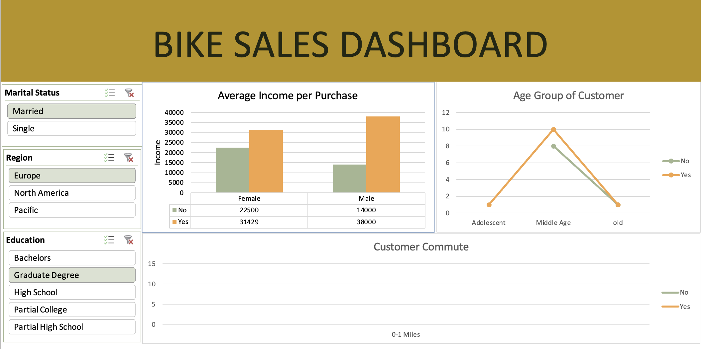

I specialize in transforming intricate datasets into actionable insights that drive informed decision-making. Through a project focused on road safety analysis, I adeptly performed comprehensive data extraction, transformation, and loading using SQL. Leveraging powerful tools like Power BI, Tableau, and Excel, I dissected the data to uncover critical trends. My visualization expertise came to the forefront as I designed interactive visuals, offering deep insights into accident severity, casualty demographics, and historical trends. These insights were distilled into informative graphics and interactive dashboards, facilitating location and time analysis for stakeholders. Through these efforts, I facilitated evidence-based policy formulation, empowered informed decision-making, and contributed to the advancement of effective road safety measures.
Skills: SQL | Power BI | Tableau | Excel


The HR Analytics Dashboard project involved the development of interactive data visualizations and dashboards to provide actionable insights into workforce dynamics. Robust data extraction and transformation was performed with SQL to optimize and integrate data from multiple sources. Power BI, Tableau, and Excel were leveraged to create comprehensive and intuitive analysis of key HR metrics. Visualizations included an employee count tracker over time for workforce assessment, attrition trend analysis to uncover turnover patterns, and average employee age representations to inform talent planning. A dynamic attrition rate dashboard enabled interactive benchmark comparisons. Productivity measurement was enhanced through differentiating active and inactive employees. Overall, the project empowered the HR team with visual analytic capabilities to identify trends, compare benchmarks, and make data-driven decisions to improve workforce engagement and health. The interactive dashboards and insightful visualizations contributed to more informed HR planning and strategy.
Skills: SQL | Power BI | Tableau | Excel

The Bike Sales Dashboard project involved in-depth analysis and visualization of store bike sales data using Excel. Robust data handling was executed by extracting, transforming, and loading the sales data to enable insightful analysis. Excel's powerful features were leveraged to create intuitive visualizations of sales trends, top-selling products, seasonal patterns, and customer preferences. Thorough analysis uncovered key insights including significant sales drivers, peak periods, demand-supply dynamics, and customer segments. Key performance metrics like revenue, margins, and growth were calculated to quantify business performance. The visualizations and metrics derived data-backed recommendations for pricing strategies, targeted marketing, optimal inventory allocation, and other crucial decisions. Overall, the Excel-based sales dashboard provided actionable and data-driven insights that helped enhance fact-based decision making, inventory management, and overall store performance. The intuitive visuals and metrics empowered data-driven actions to maximize revenues and profitability.
Skills: Excel Data Analysis | Visualization
The Music Store Analysis project involved using SQL for effective data extraction, transformation, and visualization to uncover actionable insights from music store sales data. Robust data handling was executed by successfully loading the sales data into SQL for in-depth analysis. SQL queries were utilized to create compelling visualizations that clearly communicated key sales trends, top-selling genres and artists, seasonal purchase patterns, and customer behavior analysis. Crucial business metrics including revenue, profit margins, and customer retention were calculated using SQL to quantify performance. The visualizations and SQL-powered analysis provided strategic insights into inventory optimization, dynamic pricing strategies, targeted marketing, and effective promotions. Overall, the project leveraged SQL's data manipulation and visualization capabilities for insightful analysis of the music store's sales. The identified trends, metrics, and insights contributed to data-backed decision making to enhance store performance, revenues, customer engagement, and competitive advantage.
Skills: SQL Data Extraction and Visualization
The Diwali Sales Analysis project utilized Python for effective data extraction, transformation, and visualization to uncover valuable insights from store sales data during the Diwali festival season. Sales data was skillfully extracted and loaded using Python for comprehensive analysis. Powerful Python libraries were leveraged to create high-impact visualizations conveying Diwali sales patterns, trends and key performance metrics. Thorough analysis revealed insights into bestselling products, peak shopping hours, customer purchasing behavior, and seasonal demand fluctuations during Diwali. Key metrics like revenue growth, customer acquisition and conversion rates were calculated using Python to quantify performance. The visualizations and Python-enabled analysis provided data-backed recommendations to optimize inventory management, devise targeted marketing strategies, and adjust promotional pricing for the Diwali season. Overall, the project demonstrated expertise in harnessing Python's data manipulation capabilities for insightful analysis of sales data. The data-driven findings and visualizations empowered more informed, strategic decision making to maximize Diwali sales and boost store performance.
Skills: Python Data Extraction and Visualization